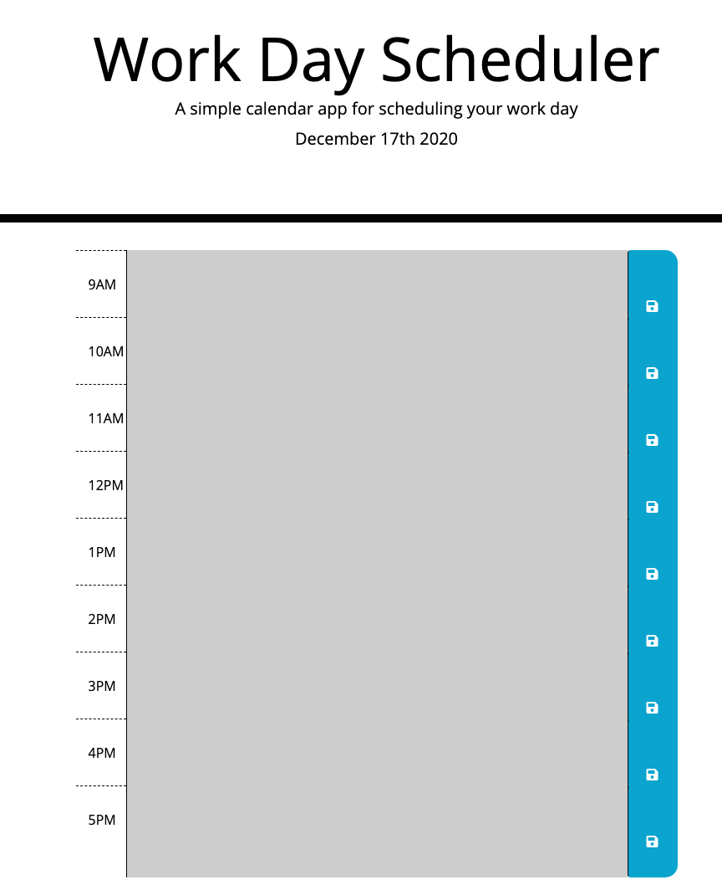

Workday Scheduler APP
This is a daily planner with standard business hours (9am - 5pm) template. This template was created using JavaScript, Bootstrap and jQuery. Moment JS was used to set the current date displayed inside Bootstrap's Jumbotron feature.
The moment().format("MMM Do YYYY")
was taken form the Moment JS website and modified to fit with the
code surrounding it and the html id "currentDay" to link it
with the index.html file for it to populate properly on the
site.
The purpose for this planner is to track your daily activities. Using locale storage you can refresh and even exit the page without worrying of loosing the notes you have typed out. As soon as you reload the page all your notes will be there!
Below you will see a screenshot of what the working site looks like, since the screenshot was taken after business hours the scheduler appears completely gray. If seen between the hours of 9am - 5pm you will notice the current time block will be colored red, while the future time block(s) will appear green and the past block(s) will appear gray. 
To view the working app click the Workday Scheduler icon or click the deployed linked below.
Deployed Link: https://claudialhc.github.io/work-day-scheduler/